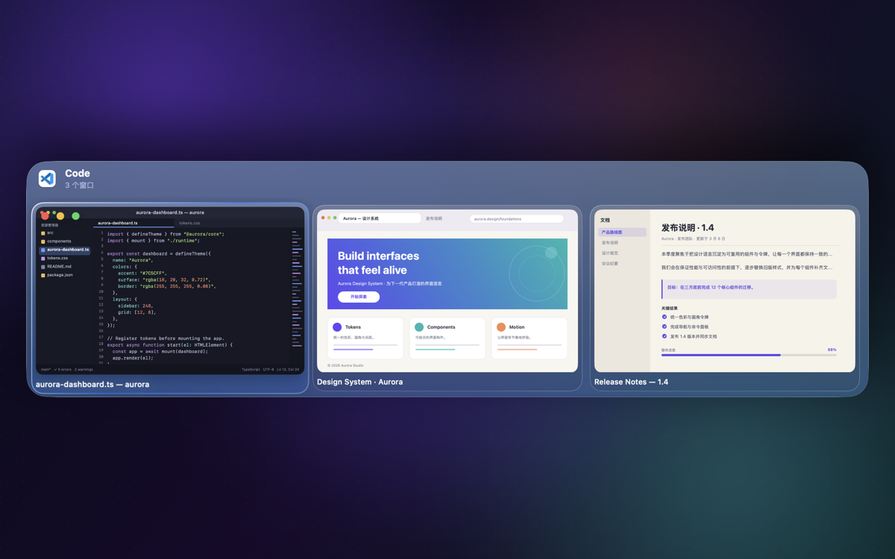
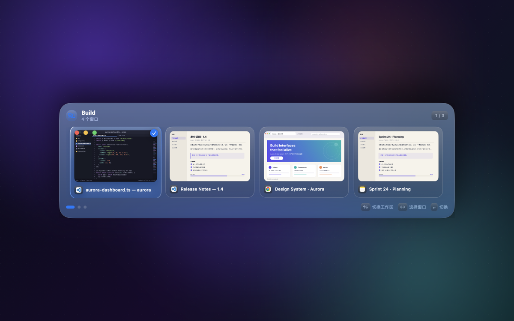
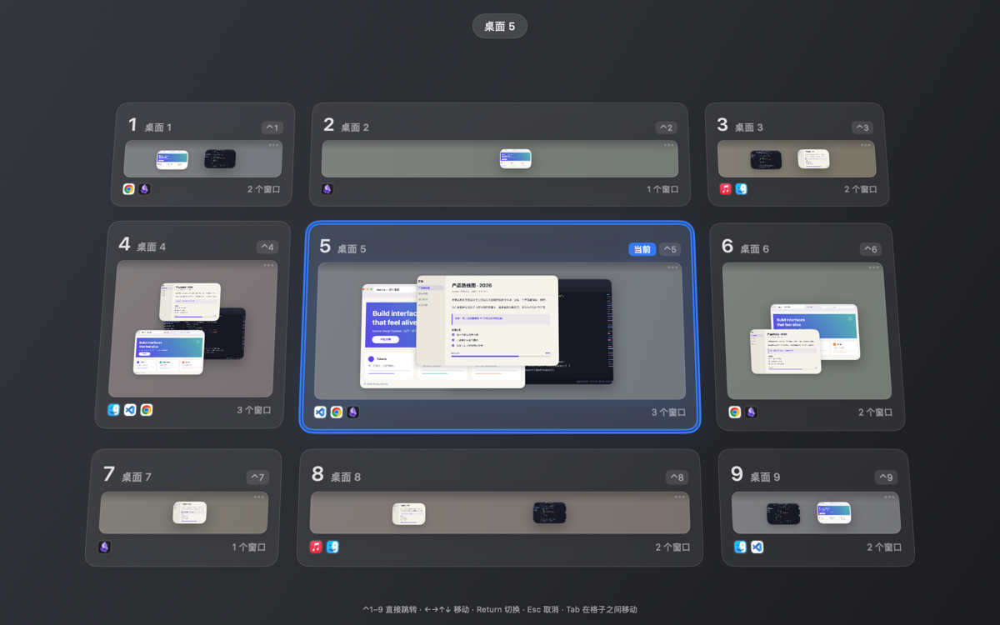

Switchly
Your next window, already in sight.
原生 macOS 菜单栏应用——先看见窗口，再切换过去。
下载 macOS 版 插件开发文档macOS 12+ · MIT 开源 · 无账号、无网络请求、不上传窗口内容




界面截图使用虚构演示内容，由当前源码渲染。
功能详解
你知道要找哪个窗口：浏览器后面的文档、另一个编辑器窗口、刚打开的参考资料。Switchly 把窗口预览摆在眼前，让你按“看到的”来选，而不是按标题去猜。
全局窗口预览
全局快捷键（默认 ⌘ ⌥ P）呼出所有打开窗口的缩略图，支持标题搜索；同一应用的多个窗口也能一眼区分。
窗口来源：「预览全部窗口」或默认的「仅已配置应用」。
预览模式：「窗口复刻」在原位置与原尺寸预览高亮窗口；「仅高亮」保持紧凑。可在预览上直接关闭、最小化、缩放窗口。
桌面范围：「全部桌面／当前桌面」，其他桌面、最小化、隐藏状态分别标记；无法截图时保留图标与标题。
Dock 悬停预览
鼠标悬停 Dock 图标，即显示该应用所有窗口缩略图，直达需要的文档，无需打开完整面板。
也可启用屏幕边缘热区或摇动鼠标触发；卡片布局可选横向、纵向或网格，窗口过多时滚动并受目标屏幕 visibleFrame 约束。
悬停 Apple Music 还会通过插件系统显示封面、曲名与播放控制。
工作区（Workspace）
把应用编组为命名工作区，如 Build、Write、Plan；为每个工作区设置快捷键与窗口排序，通过屏幕居中的工作区栏访问。
工作区只组织应用分组与窗口入口，不创建 macOS 桌面，也不保存／还原桌面布局。
音乐插件（Dock 预览）
内置插件：悬停 Apple Music 显示封面、曲名、播放 / 暂停、上一首、下一首与喜欢；Music 窗口关闭时也可使用。可选“只显示组件”或点按转盘布局。
首次使用需允许 Switchly 控制「音乐」。插件由 JavaScript 编写、声明式界面、按权限授权，详见插件 API。
应用专属快捷键
为常用应用分配专属快捷键，多个应用可共用同一快捷键。
目标应用只有一个窗口时，可开启自动直达跳过选择。
外观与主题
浅色、深色或跟随系统；透明玻璃、磨砂或关闭玻璃，共享密度与染色。macOS 26+ 使用原生 NSGlassEffectView，旧系统自动降级，并可「清除玻璃叠层」。
「窗口卡片」可单独设置预览网格、Dock 预览与工作区栏的卡片衬底色。动画遵循系统「减少动态效果」。
使用统计
仅在本地记录键鼠次数与估算节省时间，估算不代表真实生产力提升；可随时清除，永不上传。
界面内置英文与简体中文；可选开机启动、仅菜单栏（无 Dock 图标）。
九宫格桌面：所有桌面一眼看全

- 八方向切换：四指滑动切到相邻桌面（含斜向），HUD 显示目标位置，方向默认跟随系统自然滑动，可反向。
- 五指下滑看全局：打开总览，点击、方向键或
Return切换；⌃1–⌃9随处直达。 - 手势不打架：开启后接管系统四指滑动，避免双重切换；五指上滑仍打开调度中心，三指拖移不受影响。
- 自定义排布：把一个桌面拖到另一个上互换位置，按显示器分别保存、重启保持；
⌃N与卡片编号仍对应真实桌面。 - 迷路时：四指静置约 1 秒，HUD 高亮当前桌面，不切换。
- 一分钟配置：「偏好设置 → 九宫格」检测辅助功能、屏幕录制、至少两个桌面与系统「切换到桌面」快捷键，缺项一键打开对应设置面板。
快速开始
- 从 Releases 下载
Switchly-<version>.zip，解压后将Switchly.app移到「应用程序」。 - 打开后授予辅助功能（查找并聚焦窗口）与屏幕录制（显示缩略图），位于「系统设置 → 隐私与安全性」。
- 在菜单栏偏好设置的「常规 → 窗口来源」选择预览全部窗口，或在「应用」标签添加应用。
- 按
⌘ ⌥ P呼出预览，点击窗口即可切换。冲突时可在偏好设置中修改快捷键。
不需要 Xcode。发布包面向 Apple Silicon 与 Intel 通用，目前仅在 Apple Silicon 上测试。
shasum -a 256 -c Switchly-<version>.zip.sha256 校验完整性。没有缩略图时请检查屏幕录制权限；没有任何窗口时检查窗口来源设置。从源码构建
brew install xcodegen # 需要 Xcode 26+、Swift 5.9
git clone https://github.com/leungingit/switchly.git && cd switchly
make bootstrap && make build && make test-unit && make run窗口内容留在你的 Mac 上
- 完全本地处理：无账号、无在线授权、无遥测 SDK、无网络请求。
- 缩略图缓存：仅保存压缩小图，自截取起最长 24 小时、磁盘上限 64 MB；放大预览原图不落盘。复用需系统启动会话、目标进程与窗口身份一致。
- 清除：删除
~/Library/Caches/Switchly/Thumbnails/即可；过期文件读取时拒绝并删除。 - 缓存图像可能含窗口内容，未额外加密。详见仓库中的 隐私政策。
参与
遇到无法聚焦的窗口或有新想法？提交 Issue（附 macOS 版本、芯片、相关应用与复现步骤）。贡献请阅读 CONTRIBUTING，安全问题见 SECURITY。